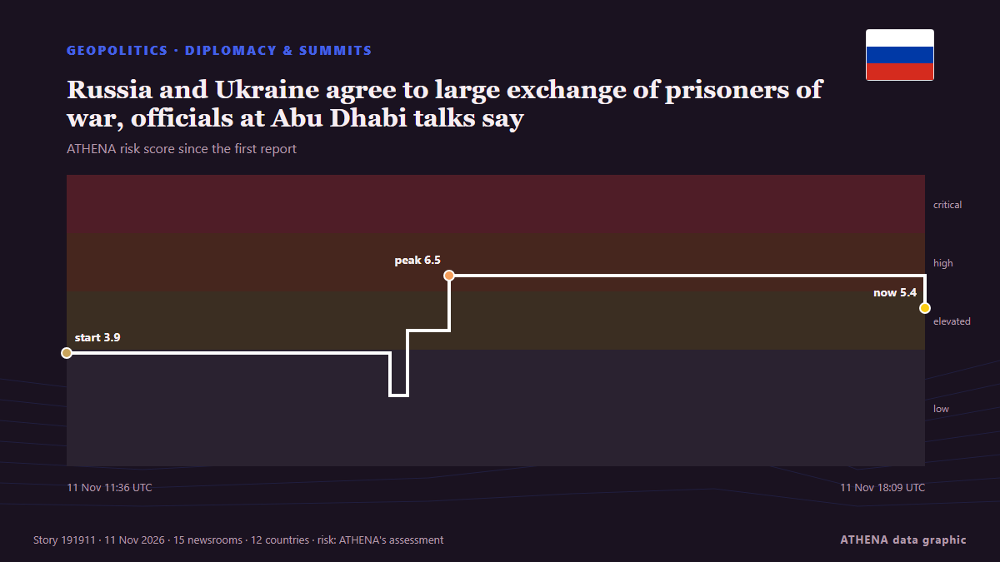

Διπλωματία & σύνοδοι
ΧορηγούμενοΠαρουσιάζεται από  Cybernetics and Artificial Intelligence Lab Welcome to the Cybernetics and Artificial Intelligence Laboratory, established at the Department of Business Administration of the National and Kapodistrian University of Athens. The lab is headed by Professor Dimitrios Thomakos. The lab aims to do research that can be published in top venues. Our research uses tools and methods of Artificial Intelligence, and lies in the following areas: - Forecasting - Decision making - Cyber security - Finance We are always looking forward to collaborating with exceptional students!
Cybernetics and Artificial Intelligence Lab Welcome to the Cybernetics and Artificial Intelligence Laboratory, established at the Department of Business Administration of the National and Kapodistrian University of Athens. The lab is headed by Professor Dimitrios Thomakos. The lab aims to do research that can be published in top venues. Our research uses tools and methods of Artificial Intelligence, and lies in the following areas: - Forecasting - Decision making - Cyber security - Finance We are always looking forward to collaborating with exceptional students!
| 29 Οκτ | 0 |
|---|---|
| 30 Οκτ | 0 |
| 31 Οκτ | 0 |
| 1 Νοε | 0 |
| 2 Νοε | 1 |
| 3 Νοε | 0 |
| 4 Νοε | 0 |
| 5 Νοε | 1 |
| 6 Νοε | 3 |
| 7 Νοε | 3 |
| 8 Νοε | 4 |
| 9 Νοε | 5 |
| 10 Νοε | 5 |
| 11 Νοε | 1 |
Οι τίτλοι των ειδήσεων παρουσιάζονται στα αγγλικά, όπως δημοσιεύτηκαν.

Russia and Ukraine agree to large exchange of prisoners of war, officials at Abu Dhabi talks say
Officials at U.S.-mediated talks between Russia and Ukraine said Wednesday that the sides have agreed a large exchange of prisoners of war. από The Korea Times
Rubio sees 'no need' to resume major strikes against Iran at G7
European members of the G7 had pressed Rubio at the meeting of foreign ministers of the group in Paris to avoid any new escalation against Iran. από The New Arab
Russia and Ukraine hold nearly 4 hours of U.S.-mediated talks in Abu Dhabi
The official said it was possible the envoys would travel to Russia at some point after the talks in order to meet with Putin. από TASS (English)
US calls for new Europe security framework as Russia, Ukraine hold first peace talks in 9 months
A first day of US-led talks between Ukraine and Russia in Abu Dhabi ended on Tuesday, with Washington calling for a “new” security framework, as Europe fears US President Donald Trump plans a deal… από Dawn
Hardline Trump aide Stephen Miller takes over as White House chief of staff
The architect of the Trump administration’s brutal crackdowns on immigration and dissent was already known as “the prime minister.” Now he’ll work as the chief of staff. από Wired
US asks Iraq to shut most Iran border crossings, Iraqi foreign minister says
Nov 8 - The US Treasury has asked Iraq to close all border crossings with Iran except for two as part of Washington's policy of increasing economic pressure on Tehran, Iraqi Foreign Minister Fuad… από The Straits Times
Russia and Ukraine hold first peace talks for nine months, gaps have narrowed
ABU DHABI: Russian and Ukrainian officials met in Abu Dhabi on Tuesday for their first US-brokered talks since February, after President Donald Trump suggested last week that a broad deal was… από New Straits Times
G7 allies to assess impact of Trump's midterm setback at Paris talks
By John Irish PARIS, Nov 9 (Reuters) - A G7 foreign ministers gathering in Paris on Monday will provide the first opportunity for Washington's allies to gauge whether a US midterm defeat for… από Al-Monitor
UFC chief Dana White declines Trump’s ‘jovial’ White House job offer
President Trump said he offered the job of White House press secretary to Dana White, president and CEO of the Ultimate Fighting Championship (UFC). από The Hill
Trump: Iran war effectively over
Shafaq News- Washington (Updated at 1:30 a.m.) The war with Iran is effectively over from a military standpoint, US President Donald Trump said on Monday after meeting Qatari Prime Minister Sheikh… από Shafaq News (English)
Trump thinks he will meet Xi and Putin at China APEC summit
Trump said he will travel to China for the APEC summit, set for Nov 18 to Nov 19. από The Straits Times
Trump says he is highly unlikely to order Iran strikes if talks progress
WASHINGTON/CAIRO, Nov 8 (Reuters) - US PresidentDonald Trump on Sunday said he was highly unlikely to order fresh attacks on Iran as long as talks to end the conflict progress, even as both countries… από Al-Monitor
G7 ministers press Rubio on Iran, Ukraine at Paris talks
Trump stoked fears of a U.S. pivot toward the Kremlin by predicting a "very big" deal with Russia involving not only Ukraine but "all of Europe." από Courthouse News
Europeans to join Ukraine peace talks in Abu Dhabi: Berlin
Lavrov says Abu Dhabi talks will address principles for a Russia-Ukraine peace deal, as top advisers from Germany, France and the UK attend to represent Ukrainian and European security interests. από TRT World
Italy blames pro-Russian hackers for leaking Tajani’s personal data
Italy’s prime minister, Giorgia Meloni, has blamed pro-Russian hackers for posting the foreign minister’s personal data on the dark web. από The Next Web
Ukraine Peace Talks Set for Abu Dhabi
The United States will bring together delegations from Ukraine and Russia in Abu Dhabi on November 10-11 to discuss ending Russia's conflict with Ukraine, post-conflict security agreements and… από CGTN (World)
US, Armenia, and Azerbaijan Launch Trilateral Technical Planning Groups to Advance TRIPP
The sides reaffirmed their respective commitments to expeditious operationalization of all modalities of TRIPP. από Aravot (English)
Europe will be represented at US-mediated Ukraine talks in Abu Dhabi: France
France has announced that Europe will be represented at US-mediated talks in Abu Dhabi with Russia and Ukraine. από Arab News